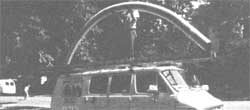

Relining Masonry Chimneys
Restoring a fireplace, wood stove chimney with Ventinox stainless steel, insulcrete, includes relining sources.
By the Mother Earth News editors
September/October 1983
Issue # 83 - September/October 1983 A woodstove is just one part of any solid-fuel combustion system, and there's a strong possibility that another component may be a weak-and dangerous-link.
You may be surprised to learn that most wood-heating industry experts agree that faulty appliances are seldom the cause of home fires these days. Rather, most woodburning-related tragedies today are the result of either improper installation or poorly maintained flue systems. Back in MOTHER NO. 61 (see "Wood Stove Safety" on page 72 of that issue), we covered installation practices in some detail ... and if you're at all unsure about the safety of your heater's location and connections, we strongly suggest that you refer to that feature or to an authoritative reference book (such as Jay Shelton's Solid Fuels Encyclopedia, Garden Way, $12.95).
The subject of this article, then, is aging and/or unsafe masonry chimneys ... and what Yon can do if you're faced with the task of repairing one. Though folk wisdom often seems to imply that brick chimneys are the best, such flues are all too often unsuited (and/or unsafe) for use with an add-on wood burner. Very few masonry chimneys, you see, have been (or are now being) built to suit the gas flow rates common to controlled combustion ("airtight") heaters, and the typically too-large masonry flues reduce draft and increase creosote buildup. Worse yet, many, older chimneys lack any sort of liner to protect the brickwork from the extreme temperatures that can be generated by a chimney fire (such blazes can exceed 2000'F). And even flues that are lined with tile may have deteriorated under the abuse caused by chimney fires, to the point where smoke (or flames) can escape into the house through cracks. As you can see, then, masonry chimneys often actually produce conditions that can lead to danger . . . by virtue of their very design.
Nonetheless, no matter what sort of chimney you're using with your woodstove, you should definitely have the system cleaned and inspected regularly. Of course, you may want to leave this vital (and somewhat unpleasant) task to a qualified sweep, but-with a little bit of study and a steady pair of feet on the rooftop-there's no reason why You can't learn to do this job.
As you familiarize yourself with your woodburner's ventilating system, one of the first things you'll have to learn is the size of the chimney brush needed to clean it properly. Once you've determined that dimension, you can compare your flue size directly (if' it's round) against the stovepipe diameter recommended by your heater's manufacturer, or calculate the cross-sectional area of a rectangular stack for comparison with that figure. When checking the suitability of your chimney, bear in mind how much even a small increase in size influences capacity: An eight-inch-diameter chimney, for example, has almost twice as much cross-sectional area as does a six-inch one. Thus, what might seem like a small deviation from recommended procedure could make a big difference in performance and safety.
Once you (or your sweep) have cleaned the walls of the flue, the lining should be checked for cracks or holes, and the mortar joints between the tile sections should be inspected for soundness. Most professionals do this by using a mirror to reflect sunlight down into the chimney, but a trouble light may be helpful on cloudy days (and when inspecting chimneys with bends).
Should the examination turn up deficiencies in the size or condition of the chimney, there are basically only two things you can do: You can tear it down and build a safe, properly sized one, or you can have your existing flue relined. There are a couple of good reasons for taking the second approach: For one thing, relining a chimney costs approximately a third of what a mason would likely charge to disassemble an old one and build a new stack in its place ... and a relined chimney may actually end up being safer and more durable than a new tile-lined one!
In the following paragraphs, we're going to describe two methods of lining an existing masonry chimney. Both systems have their strengths and weaknesses-which we'll try to point out-and neither is exactly inexpensive. However, each approach can produce a chimney that, when used in conjunction with a controlled-combustion woodburner, is essentially better than even a new brick chimney. We'll be featuring a pair of specific systems that we've seen in action, and will list other manufacturers of similar products at the end of the article. Of course, the fact that we've chosen to show you the Insulcrete and Ventinox reliners doesn't mean that we necessarily judge them to be superior to all other products. From personal experience, we do have confidence in their systems, though ... and we're very grateful to Pete Luter (president of the North Carolina Guild of Professional Chimney Sweeps and a reliner himself, out of the Roanoke Rapids, North Carolina shop called Countryside) for leading us to them.
VENTINOX STAINLESS STEEL
In the past, many people who've found their chimneys to be incapable of providing acceptable draft for a woodstove have resorted to stringing stovepipe up the flue. And, though the practice usually has accomplished its goal, quite often the owners have been surprised to find that creosote built up inside the metal pipe at an alarming rate. Without insulation around the steel tubing, heat is lost from the smoke so quickly that the products of incomplete combustion readily condense on the walls of the flue. Furthermore, if the material used for such a simple relining is merely galvanized stovepipe, the system will deteriorate very quickly.
On the other hand, existing chimneys that have been relined with quality stainless steel pipe have a far better track record for longevity, but still suffer from rapid creosote deposition ... unless they're insulated. Unfortunately, running a factory-built double- or triple-wall chimney up a masonry flue is cumbersome and expensive (these systems can cost as much as $55 per foot). This method also does nothing to strengthen a weak brick stack, and can be downright impossible if there are any significant bends present in the existing flue.
However, a system commonly used by the Swiss avoids such problems by employing a high-grade, flexible stainless steel liner (to accommodate turns) with a fill of insulation (for good draft and low creosote deposition) or-when necessary for strength--a mix of insulation and masonry cement. The Ventinox relining method (as it's called) came to the U.S. less than a decade ago, when a transplanted Austrian, Martin Wawrla, was faced with the job of relining four existing chimneys while restoring his Albany, New York home. After coating the inside of one flue with refractory cement, a procedure that involved opening an access hole every few feet, Martin decided to track down the owners of the relining system he'd seen so often in Europe. By working through the Swiss office of Ventinox, he ended up proposing to the U.S. division of the company, American Boa, that it bring the European system to this country. As a result, Martin is now project manager of American Boa's growing chimney relining business.
The Ventinox liner is made from a continuous band of 33-gauge 321 stainless steel that is corrugated, rolled in a spiral, and then bound together by a computer-controlled electric welder. The corrugated spiral helps give the comparatively thin material strength and reduces problems with thermal expansion (which has been known to lift the top right off a chimney relined with solidly mounted standard stovepipe). In addition, 321 stainless is perhaps the steel alloy that's most resistant to the corrosive environment in a woodburner's chimney, and the company guarantees its product for ten years.
Of course, other stainless alloys may last as long as 321 does in most environments, but the strain imposed by a chimney fire can eventually be the undoing of lesser metals. You see, once many corrosion-resistant steels have been heated to above 2000'F, the chromium in the metal (which prevents corrosion) may begin to lose its bond with the other elements ... and intergranular deterioration can then begin. To date, Ventinox is the only stainless reliner that's been tested to both Underwriters Laboratories basic (UL 103) and high-temperature (2100°F) standards.
Installing Ventinox is a straightforward job, and trained crews have been known to do a basic chimney in just three hours. The procedure consists of installing a baseplate, with a hole to fit the diameter of the liner (Ventinox is available in six-, seven-, eight-, and ten-inch sizes for residential applications), on the smoke shelf above the fireplace ... threading the one-piece tube down the chimney, engaging it into the baseplate, and centering it with spacers ... filling the area around the liner with the appropriate insulative mixture ... and capping the relined flue.
In order to assure structural integrity (and a leakproof installation), Ventinox is always installed with at least the first foot (and preferably the first five feet) of void around the steel filled with a vermiculite and masonry cement slurry. From that point on, the area around the liner can be filled with insulation alone, as long as the surrounding chimney is sound. Vermiculite is very resistant to thermal degradation, but--unfortunately--it can absorb water (Ventinox and other reliners use an asphalt-treated version that is less susceptible to this problem), so the top of the relined flue must be carefully sealed with either a pointed-out masonry cap or a fabricated stainless steel lid. In addition, the rocks from which vermiculite is quarried also often contain asbestos, and that carcinogenic material can contaminate the insulation. Some sources guarantee their vermiculite to be free of asbestos, but it's still a good idea to exercise caution (and wear a respirator) when using the material.
The Ventinox installation we observed was part of American Boa's training seminars for their certified installers. Like most relining companies, American Boa prefers to work through chimney sweeps, since these professionals already have an intimate knowledge of woodstove flue systems. And even though it was their first attempt at the job, the crew of sweeps managed to reline a 25-foot chimney and install a fireplace insert in about six hours. The cost of the Ventinox reliner itself runs between $15 and $20 per foot (depending on the diameter required), and labor and other material charges usually bring the final figure up to between $30 and $40 per foot.
However, the contract also includes one free inspection for safety and creosote accumulation ... and-like other relining companies-American Boa encourages homeowners to maintain their chimneys properly by making the warranty contingent on regular inspection and cleaning.
INSULCRETE
John Gusler, a concrete engineer and the developer of the Insulcrete Relining System, started repairing chimneys about eight years ago in order to increase business at his stove dealership. Being a conscientious proprietor, he found himself in the difficult position of refusing to sell appliances to individuals whose chimneys couldn't meet his criteria for safety. The logical decision, of course, was to start repairing those deteriorated flues.
Insulcrete itself is a proprietary insulating concrete mixture that, through the years, has seen a number of different pour techniques. The first several dozen flues were done using metal liners as forms, but-since Insulcrete is capable of standing up to the woodburning environment on its own-Gusler began looking for a way to eliminate the steel. He settled on a rubber bladder that's inflated by an air compressor.
With the help of a partner (mason Mark Borell), John developed a kit-consisting of two bladders, fittings, and instructions-to market to chimney sweeps. Today, Mark and/ or John hold two-day instruction seminars around the country nearly every week, and one of MOTHER's staff members was fortunate enough to attend the school in Mark's hometown of Navarre, Ohio.
As was the case with Ventinox, formed-in-place refractory cement relinings were first used in Europe ... in England, as a matter of fact. Their performance with coal-burning appliances has been well established in that country, and Insulcrete has been tested to the UL 103 and ULC-S-629M standards by Arnold Greene Testing Laboratories.
Our session with Insulcrete consisted of dropping a six-inch-diameter rubber tube down the 28-foot-tall chimney shown in the photos ... installing turned wooden plugs with clamps ... inflating the former to about 20 pounds per square inch (PSI) ... centering it with spacers ... and pouring the Insulcrete (which is a mix of refractory cement, aluminum silicate, vermiculite, one-inch-long alkali-resistant fiberglass threads, and water) down from the top of the flue by bucket brigade (the partners also have a slurry pump available for sale to installers, but don't usually find that it's necessary). The form is left in place for 24 hours and then can be deflated and removed for reuse. At that time, the top of the flue is pointed out with regular mortar, and-if necessary-the exposed portion of the chimney is parged (coated).
Insulcrete doesn't specify a warranty period to its authorized installers, but Mark Borell does provide a lifetime warranty (it's even transferable), as long as the customer keeps a maintenance contract with his sweeping service. (Both Mark and John suggest that 15 years would be a conservative warranty for an installer to offer.) The cost of an Insulcrete relining starts at about $25 per foot (for the most straightforward job) and will run between $30 and $40 for anything more complex. Labor makes up a major part of the bill, partially because the installer must charge enough to pay off the cost of his relining kit (which runs between $2,000 and $7,500 ... from the basic model to the fully equipped trailer).
HOW MUCH BETTER?
As we've already suggested, both Insulcrete and Ventinox can turn your old chimney into a superior flue for a woodburner. But, you may be wondering, is it really worth all that money if the chimney is essentially sound? For evidence of the advantages of a wellinsulated flue, we'll refer you to the two photos of existing chimney tops that accompany this article. Both flues were relined by (or under the direction of) Pete Luter ... and both have Dura-Vent stainless steel pipe. One of them, however, was insulated with perlite, while the other has only an air space. The insulated chimney has yet to be cleaned after four years of use, and shiny metal is still visible in places. The uninsulated reliner, however, has accumulated almost an inch of creosote in less than one season of use.
The answer seems clear: The amount of flue-cleaning time that can be saved (as well as the money that will be saved as a result of less-frequent calls to the chimney sweep) with a properly relined chimney is substantial ... and, of course, no one can put a price on safety!
RELINING SOURCES
You can contact the following companies to find out where a nearby qualified reliner may be located,
Acu-Set Mazzeo's Chimney Sweep Suppliers Dept. TMEN RFD 1, Box 1245 Rockland, Maine 04841
American Boa Incorporated Ventinox Headquarters Dept. TMEN P.O. Box 1743 Albany, New York 12201
Insulcrete Relining System Dept. TMEN Box 856 Delaware, Ohio 43015
Iso-Kaern Norwegian Wood Stoves Dept. TMEN Box 219 Clarkson Post Office Mississauga, Ontario Canada L5J 3Y1
National Supaflu Systems Dept. TMEN Box 289 Central Bridge, New York 12035
Permaflu and Z-Flex Energy House Dept. TMEN Box 4035
Manchester, New Hampshire 03108
Readi-Flu D'Arcy Chimney Relining Dept. TMEN Box 387 Windsor, Connecticut 06095
Renew-A-Flue Dura-Vent Dept. TMEN Box 2249 Redwood City, California 94064
Safe-T-Liner Heat-Fab Dept. TMEN 38 Haywood Street Greenfield, Massachusetts 01301
EDITOR'S NOTE: See Mom's Marketplace (page 118) for another possible relining system for your chimney.
 STAFF PHOTOS Flames from a chimney fire can generate temperature that exceed 2000?F. [2] Installing the weather-sealing, stainless steel cap on a Ventinox relined chimney.[3] The Ventinox system usually uses a stainless steel baseplate inside the smoke chamber. [4] To reline a chimney with the Insulcrete system, a bladder is inserted into the flue and inflated with an air compressor. |
 FROM LEFT TO RIGHT: Then the cement and insulation mixture is poured in from the top.An insulated chimney after four years' use, without cleaning. An uninsulated flue after one season |
 |